A new upload of the OpenSNP data is now available on Zenodo: https://zenodo.org/records/18493898
OpenSNP aggregates direct-to-consumer genotyping data uploaded by users of 23andMe, AncestryDNA and FamilyTreeDNA. Within each company the uploads come from a mix of chip generations (e.g. 23andMe v3 OmniExpress+, v4 OmniExpress+ custom, v5 GSA), so concatenating everything into a single PLINK fileset produces extremely patchy variant-level missingness — the union of the chips is much larger than what any single sample carries.
To make the data usable for imputation and downstream polygenic scoring we need to separate each company’s data into per-chip filesets before imputing. The strategy used throughout this document is:
plink2 --missing on the raw fileset and look at the
histogram of per-sample non-missing variant counts
(NONMISSING_CT).NONMISSING_CT, split
on those thresholds.F_MISS, i.e. variants present in
only a subset of samples — and re-compute sample missingness on that
subset. The clusters are usually obvious there..keep files are written, run
--make-bed → --geno 0.05 →
--mind 0.05 to drop variants and samples that don’t fit
cleanly.The final cross-array variant-overlap check at the bottom of this document is what tells us whether each split actually captured a different chip, or just two density tiers of the same chip.
mkdir -p ~/oliverpainfel/Data/OpenSNP/zenodo_18493898
cd ~/oliverpainfel/Data/OpenSNP/zenodo_18493898
wget https://zenodo.org/records/18493898/files/23andme.zip?download=1
wget https://zenodo.org/records/18493898/files/AncestryDNA.zip?download=1
wget https://zenodo.org/records/18493898/files/FamilyTreeDNA.zip?download=1
mv '23andme.zip?download=1' 23andme.zip
mv 'AncestryDNA.zip?download=1' AncestryDNA.zip
mv 'FamilyTreeDNA.zip?download=1' FamilyTreeDNA.zip
unzip 23andme.zip
unzip AncestryDNA.zip
unzip FamilyTreeDNA.zip
Each archive ships both an unfiltered and a _filtered
fileset (the _filtered one was produced by the OpenSNP
curators and intersects variants across chips, hence the much smaller
variant counts). Inspect both:
library(data.table)
# Check sample size and number of variants in filtered and unfiltered versions of each dataset
datasets <- c('23andme','AncestryDNA','FamilyTreeDNA')
types <- c('filtered','unfiltered')
stats <- NULL
for(i in datasets){
for(j in types){
tmp_bim <- fread(
paste0(
'~/oliverpainfel/Data/OpenSNP/zenodo_18493898/',
i,
ifelse(j == 'filtered', '_filtered', ''),
'.bim'
),
header = F
)
tmp_fam <- fread(
paste0(
'~/oliverpainfel/Data/OpenSNP/zenodo_18493898/',
i,
ifelse(j == 'filtered', '_filtered', ''),
'.fam'
),
header = F
)
stats <- rbind(
stats,
data.frame(
dataset = i,
type = j,
n_var = nrow(tmp_bim),
n_ind = nrow(tmp_fam)
)
)
}
}Compute per-sample and per-variant missingness for every company’s unfiltered fileset — this is the input to the per-company splitting work below:
# Compute per-sample (.smiss) and per-variant (.vmiss) missingness on the
# unfiltered, all-chip fileset for each company.
for dataset in $(echo 23andme AncestryDNA FamilyTreeDNA); do
/users/k1806347/oliverpainfel/Software/plink2 \
--bfile ~/oliverpainfel/Data/OpenSNP/zenodo_18493898/${dataset} \
--missing \
--out ~/oliverpainfel/Data/OpenSNP/zenodo_18493898/${dataset}
done23andMe has used three chip generations (per their public documentation):
| Chip | Supplier | Chip name | SNPs |
|---|---|---|---|
| v3 | Illumina | OmniExpress+ | ~967,000 |
| v4 | Illumina | OmniExpress+ (custom) | ~570,000 |
| v5 | Illumina | GSA | ~640,000 (+60k custom) |
The per-sample NONMISSING_CT histogram shows a clear
bimodal pattern: samples genotyped on the v3 (OmniExpress+) chip carry
~900k+ variants, while v4 and v5 samples carry far fewer. A single
threshold at 900,000 cleanly separates v3 from the v4+v5 mix.
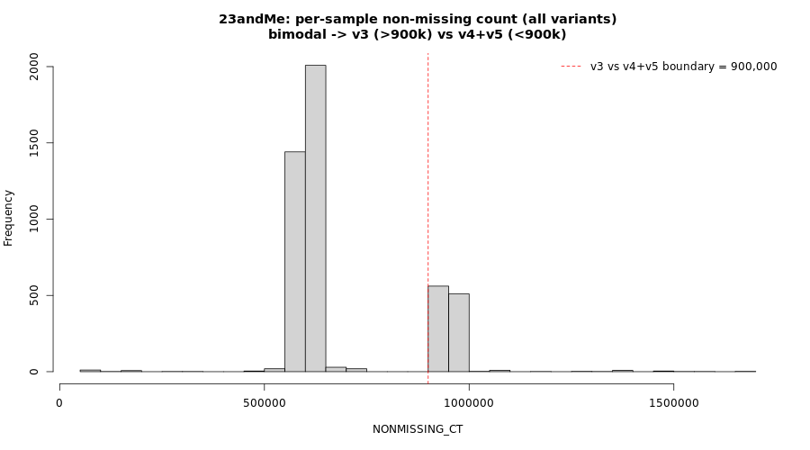
23andMe per-sample NONMISSING_CT (all variants)
smiss <- fread('~/oliverpainfel/Data/OpenSNP/zenodo_18493898/23andme.smiss')
smiss$NONMISSING_CT <- smiss$OBS_CT - smiss$MISSING_CT
hist(smiss$NONMISSING_CT, 20)
# Samples with > 900k non-missing variants are the v3 (OmniExpress+) chip.
dat_v3 <- smiss$IID[smiss$NONMISSING_CT > 900000]
write.table(
cbind(dat_v3, dat_v3),
'~/oliverpainfel/Data/OpenSNP/zenodo_18493898/23andme_more_900k.keep',
row.names = F,
col.names = F,
quote = F
)Re-run --missing on each side of the 900k split so we
can investigate the v4-vs-v5 structure on its own:
# Compute missingness within each side of the v3 / not-v3 split.
/users/k1806347/oliverpainfel/Software/plink2 \
--bfile ~/oliverpainfel/Data/OpenSNP/zenodo_18493898/23andme \
--keep ~/oliverpainfel/Data/OpenSNP/zenodo_18493898/23andme_more_900k.keep \
--missing \
--out ~/oliverpainfel/Data/OpenSNP/zenodo_18493898/23andme_more_900k
/users/k1806347/oliverpainfel/Software/plink2 \
--bfile ~/oliverpainfel/Data/OpenSNP/zenodo_18493898/23andme \
--remove ~/oliverpainfel/Data/OpenSNP/zenodo_18493898/23andme_more_900k.keep \
--missing \
--out ~/oliverpainfel/Data/OpenSNP/zenodo_18493898/23andme_less_900k
v4 and v5 carry similar numbers of variants, so the sample-level histogram isn’t enough to split them. Instead, inspect the variant-level F_MISS distribution within the <900k samples: the high-F_MISS peak corresponds to variants present on only one of the two chips. The chunk below cross-checks those high-peak variant IDs against the GSA-24v1 and OmniExpress-24 manifests and confirms they are GSA-array variants.
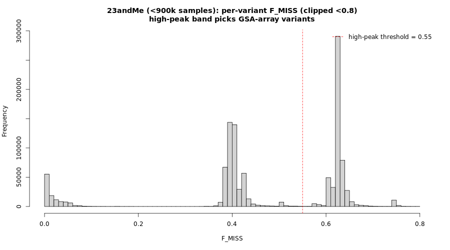
23andMe (<900k samples) per-variant F_MISS
vmiss <- fread('~/oliverpainfel/Data/OpenSNP/zenodo_18493898/23andme_less_900k.vmiss')
vmiss <- vmiss[vmiss$F_MISS < 0.8, ]
hist(vmiss$F_MISS, 100)
# Variants with F_MISS > 0.55 are present in a minority of <900k samples.
# These are the discriminating set between v4 and v5.
vmiss_high_peak <- vmiss$ID[vmiss$F_MISS > 0.55]
write.table(
vmiss_high_peak,
'~/oliverpainfel/Data/OpenSNP/zenodo_18493898/23andme_high_peak.extract',
row.names = F,
col.names = F,
quote = F)
# Cross-check the high-peak variants against the chip manifests:
gsa <- fread(cmd = "cut -f 1 -d',' ~/oliverpainfel/Data/OpenSNP/zenodo_18493898/GSA-24v1-0_C1.csv | tail -n +8", header =T)
gsa <- gsa[grepl('^GSA-rs', gsa$IlmnID),]
gsa$rsid<-gsub('-.*','', gsub('GSA-','',gsa$IlmnID))
omni <- fread(cmd = "cut -f 1 -d',' ~/oliverpainfel/Data/OpenSNP/zenodo_18493898/humanomniexpress-24-v1-1-a.csv | tail -n +8", header =T)
omni <- omni[grepl('^rs', omni$IlmnID),]
omni$rsid<-gsub('-.*','',omni$IlmnID)
sum(vmiss_high_peak %in% gsa$rsid)
sum(vmiss_high_peak %in% omni$rsid)
# The GSA hit count is much higher than OmniExpress -> high-peak variants
# are GSA-array variants -> samples carrying them are v5.Recompute per-sample missingness within the <900k samples but restricted to those high-peak (GSA) variants:
/users/k1806347/oliverpainfel/Software/plink2 \
--bfile ~/oliverpainfel/Data/OpenSNP/zenodo_18493898/23andme \
--remove ~/oliverpainfel/Data/OpenSNP/zenodo_18493898/23andme_more_900k.keep \
--extract ~/oliverpainfel/Data/OpenSNP/zenodo_18493898/23andme_high_peak.extract \
--missing \
--out ~/oliverpainfel/Data/OpenSNP/zenodo_18493898/23andme_less_900k_high_peak
The resulting NONMISSING_CT histogram is cleanly
bimodal: samples that carry many of the GSA-specific variants (>200k)
are v5; the rest are v4.
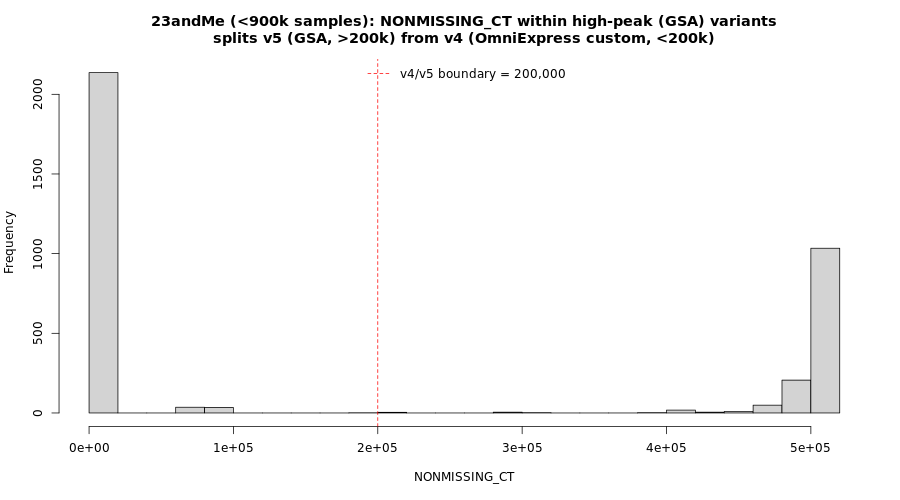
23andMe NONMISSING_CT within high-peak (GSA) variants
smiss <- fread('~/oliverpainfel/Data/OpenSNP/zenodo_18493898/23andme_less_900k_high_peak.smiss')
smiss$NONMISSING_CT <- smiss$OBS_CT - smiss$MISSING_CT
hist(smiss$NONMISSING_CT, 20)
dat_v5 <- smiss$IID[smiss$NONMISSING_CT > 200000]
dat_v4 <- smiss$IID[smiss$NONMISSING_CT < 200000]
write.table(
cbind(dat_v5, dat_v5),
'~/oliverpainfel/Data/OpenSNP/zenodo_18493898/23andme_v5.keep',
row.names = F,
col.names = F,
quote = F
)
write.table(
cbind(dat_v4, dat_v4),
'~/oliverpainfel/Data/OpenSNP/zenodo_18493898/23andme_v4.keep',
row.names = F,
col.names = F,
quote = F
)Sanity-check the v4 split by re-running --missing on it
alone — both the sample and variant histograms should be tight (single
chip):
/users/k1806347/oliverpainfel/Software/plink2 \
--bfile ~/oliverpainfel/Data/OpenSNP/zenodo_18493898/23andme \
--keep ~/oliverpainfel/Data/OpenSNP/zenodo_18493898/23andme_v4.keep \
--missing \
--out ~/oliverpainfel/Data/OpenSNP/zenodo_18493898/23andme_v4
smiss <- fread('~/oliverpainfel/Data/OpenSNP/zenodo_18493898/23andme_v4.smiss')
smiss$NONMISSING_CT <- smiss$OBS_CT - smiss$MISSING_CT
hist(smiss$NONMISSING_CT, 20)
vmiss <- fread('~/oliverpainfel/Data/OpenSNP/zenodo_18493898/23andme_v4.vmiss')
vmiss <- vmiss[vmiss$F_MISS < 0.8, ]
hist(vmiss$F_MISS, 100)
# Single tight peak at high NONMISSING_CT and at low F_MISS = clean v4 chip.Materialise the v3, v4, v5 keep files as PLINK filesets, then apply
--geno 0.05 (drop variants missing in >5% of samples
within that chip) and --mind 0.05 (drop the few
samples that are still patchy after splitting).
/users/k1806347/oliverpainfel/Software/plink2 \
--bfile ~/oliverpainfel/Data/OpenSNP/zenodo_18493898/23andme \
--keep ~/oliverpainfel/Data/OpenSNP/zenodo_18493898/23andme_more_900k.keep \
--make-bed \
--out ~/oliverpainfel/Data/OpenSNP/zenodo_18493898/23andme_v3
/users/k1806347/oliverpainfel/Software/plink2 \
--bfile ~/oliverpainfel/Data/OpenSNP/zenodo_18493898/23andme \
--keep ~/oliverpainfel/Data/OpenSNP/zenodo_18493898/23andme_v4.keep \
--make-bed \
--out ~/oliverpainfel/Data/OpenSNP/zenodo_18493898/23andme_v4
/users/k1806347/oliverpainfel/Software/plink2 \
--bfile ~/oliverpainfel/Data/OpenSNP/zenodo_18493898/23andme \
--keep ~/oliverpainfel/Data/OpenSNP/zenodo_18493898/23andme_v5.keep \
--make-bed \
--out ~/oliverpainfel/Data/OpenSNP/zenodo_18493898/23andme_v5
for version in $(echo v3 v4 v5); do
/users/k1806347/oliverpainfel/Software/plink2 \
--bfile ~/oliverpainfel/Data/OpenSNP/zenodo_18493898/23andme_${version} \
--geno 0.05 \
--make-bed \
--out ~/oliverpainfel/Data/OpenSNP/zenodo_18493898/23andme_${version}_geno
/users/k1806347/oliverpainfel/Software/plink2 \
--bfile ~/oliverpainfel/Data/OpenSNP/zenodo_18493898/23andme_${version}_geno \
--mind 0.05 \
--make-bed \
--out ~/oliverpainfel/Data/OpenSNP/zenodo_18493898/23andme_${version}_filtered
done
AncestryDNA’s sample-level NONMISSING_CT histogram is
unimodal at the top level, even though multiple chips are present in the
data. The split-by-sample-missingness trick that worked for 23andMe
doesn’t apply directly here. Instead we use the variant-level
F_MISS distribution to identify “high-peak” variants —
variants present in only a subset of samples — and use those as a probe
to separate one chip at a time.
The per-sample histogram has a long thin lower tail but a single
dominant mode around 660–680k variants. The per-variant
F_MISS histogram, by contrast, has multiple bands —
characteristic of a mixture of chips sharing a common backbone.
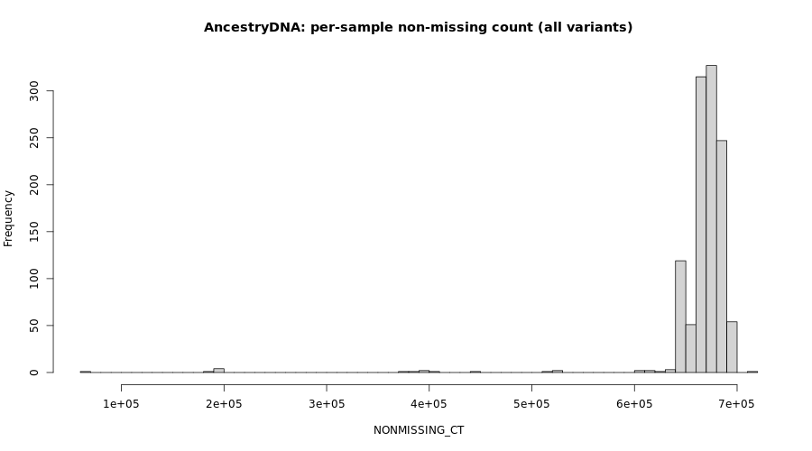
AncestryDNA per-sample NONMISSING_CT
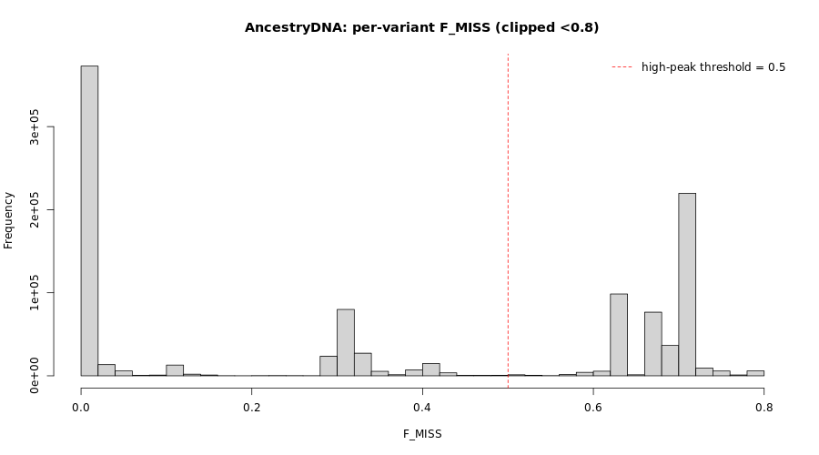
AncestryDNA per-variant F_MISS
smiss <- fread('~/oliverpainfel/Data/OpenSNP/zenodo_18493898/AncestryDNA.smiss')
smiss$NONMISSING_CT <- smiss$OBS_CT - smiss$MISSING_CT
hist(smiss$NONMISSING_CT, 50,
main = 'AncestryDNA: per-sample non-missing count (all variants)',
xlab = 'NONMISSING_CT')
vmiss <- fread('~/oliverpainfel/Data/OpenSNP/zenodo_18493898/AncestryDNA.vmiss')
vmiss <- vmiss[vmiss$F_MISS < 0.8, ]
hist(vmiss$F_MISS, 50,
main = 'AncestryDNA: per-variant F_MISS (clipped <0.8)',
xlab = 'F_MISS')
abline(v = 0.5, col = 'red', lty = 2)
legend('topright', 'high-peak threshold = 0.5', col = 'red', lty = 2, bty = 'n')
# Variants with F_MISS > 0.5 are present in a minority of samples ->
# carrier samples should cluster apart in the next step.
vmiss_high_peak <- vmiss$ID[vmiss$F_MISS > 0.5]
write.table(
vmiss_high_peak,
'~/oliverpainfel/Data/OpenSNP/zenodo_18493898/AncestryDNA_high_peak.extract',
row.names = F,
col.names = F,
quote = F)Recompute sample missingness restricted to those high-peak variants:
/users/k1806347/oliverpainfel/Software/plink2 \
--bfile ~/oliverpainfel/Data/OpenSNP/zenodo_18493898/AncestryDNA \
--extract ~/oliverpainfel/Data/OpenSNP/zenodo_18493898/AncestryDNA_high_peak.extract \
--missing \
--out ~/oliverpainfel/Data/OpenSNP/zenodo_18493898/AncestryDNA_high_peak
The resulting histogram is cleanly bimodal — ~331 samples carry most of the high-peak variants (NONMISSING_CT > 200,000) and form v1, while the rest don’t carry them and need further splitting.
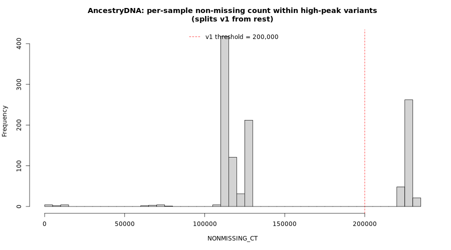
AncestryDNA NONMISSING_CT within high-peak variants
smiss <- fread('~/oliverpainfel/Data/OpenSNP/zenodo_18493898/AncestryDNA_high_peak.smiss')
smiss$NONMISSING_CT <- smiss$OBS_CT - smiss$MISSING_CT
hist(smiss$NONMISSING_CT, 50,
main = 'AncestryDNA: per-sample NONMISSING_CT within high-peak variants\n(splits v1 from rest)',
xlab = 'NONMISSING_CT')
abline(v = 200000, col = 'red', lty = 2)
legend('top', 'v1 threshold = 200,000', col = 'red', lty = 2, bty = 'n')
# Samples carrying >200k high-peak variants are the v1 chip.
keep <- smiss$IID[smiss$NONMISSING_CT > 200000]
write.table(
cbind(keep, keep),
'~/oliverpainfel/Data/OpenSNP/zenodo_18493898/AncestryDNA_v1.keep',
row.names = F,
col.names = F,
quote = F
)Compute missingness on the not-v1 samples to see whether the remaining ~806 samples are a single chip or a further mixture:
/users/k1806347/oliverpainfel/Software/plink2 \
--bfile ~/oliverpainfel/Data/OpenSNP/zenodo_18493898/AncestryDNA \
--remove ~/oliverpainfel/Data/OpenSNP/zenodo_18493898/AncestryDNA_v1.keep \
--missing \
--out ~/oliverpainfel/Data/OpenSNP/zenodo_18493898/AncestryDNA_not_v1
The not-v1 variant F_MISS distribution still has two
clear bands at ~0.45 and ~0.55 — i.e. another mixture. Pull those band
variants out as a new high-peak set and use them to discriminate the
remaining chips.
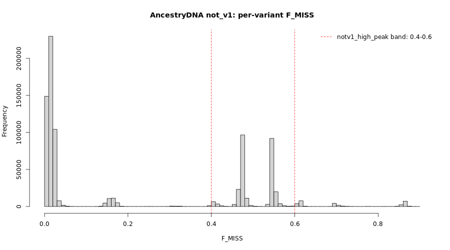
AncestryDNA not_v1 per-variant F_MISS
vmiss <- fread('~/oliverpainfel/Data/OpenSNP/zenodo_18493898/AncestryDNA_not_v1.vmiss')
vmiss <- vmiss[vmiss$F_MISS < 0.9, ]
hist(vmiss$F_MISS, 100,
main = 'AncestryDNA not_v1: per-variant F_MISS (clipped <0.9)',
xlab = 'F_MISS')
abline(v = c(0.4, 0.6), col = 'red', lty = 2)
legend('topright', 'notv1_high_peak band: 0.4-0.6',
col = 'red', lty = 2, bty = 'n')
# Variants in 0.4-0.6 missingness within not_v1 are the discriminating set
# between the remaining chips (v2 vs v3 vs v4).
notv1_high_peak <- vmiss$ID[vmiss$F_MISS > 0.4 & vmiss$F_MISS < 0.6]
write.table(
notv1_high_peak,
'~/oliverpainfel/Data/OpenSNP/zenodo_18493898/AncestryDNA_notv1_high_peak.extract',
row.names = F, col.names = F, quote = F
)# Sample missingness within the not_v1 group restricted to notv1_high_peak variants.
/users/k1806347/oliverpainfel/Software/plink2 \
--bfile ~/oliverpainfel/Data/OpenSNP/zenodo_18493898/AncestryDNA \
--remove ~/oliverpainfel/Data/OpenSNP/zenodo_18493898/AncestryDNA_v1.keep \
--extract ~/oliverpainfel/Data/OpenSNP/zenodo_18493898/AncestryDNA_notv1_high_peak.extract \
--missing \
--out ~/oliverpainfel/Data/OpenSNP/zenodo_18493898/AncestryDNA_notv1_high_peak
The recomputed NONMISSING_CT histogram (excluding the
lower tail of stragglers) shows three tight, well-separated peaks
corresponding to v2, v3 and
v4. The lower tail (NONMISSING_CT < 125k, ~20
samples) is left unassigned — those samples will be removed by
--mind 0.05 in the final filter step.
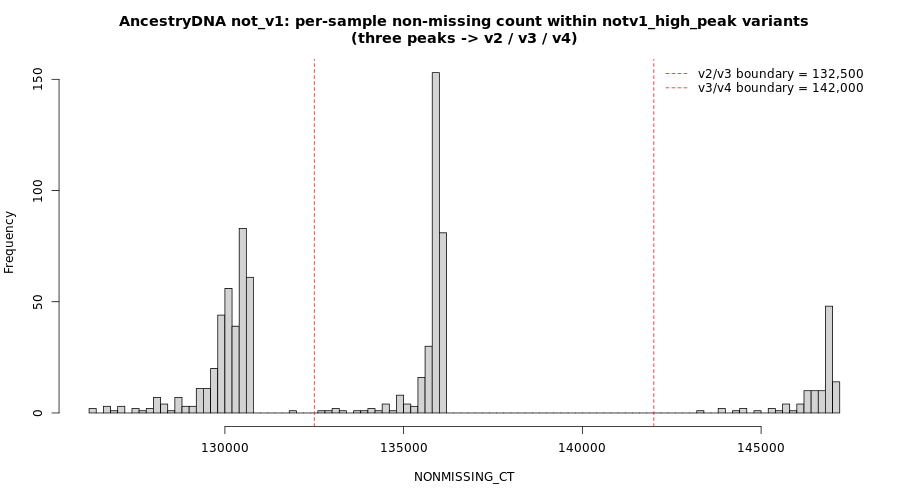
AncestryDNA NONMISSING_CT within notv1 high-peak variants
smiss <- fread('~/oliverpainfel/Data/OpenSNP/zenodo_18493898/AncestryDNA_notv1_high_peak.smiss')
smiss$NONMISSING_CT <- smiss$OBS_CT - smiss$MISSING_CT
hist(smiss$NONMISSING_CT[smiss$NONMISSING_CT > 100000], 80,
main = 'AncestryDNA not_v1: NONMISSING_CT within notv1_high_peak variants\n(three peaks -> v2 / v3 / v4)',
xlab = 'NONMISSING_CT')
abline(v = c(132500, 142000), col = 'red', lty = 2)
legend('topright',
c('v2/v3 boundary = 132,500', 'v3/v4 boundary = 142,000'),
col = 'red', lty = 2, bty = 'n')
# Three tight clusters within not_v1:
# ~365 samples at ~130k -> v2 (lower NONMISSING_CT in high-peak set)
# ~310 samples at ~136k -> v3 (middle)
# ~111 samples at ~147k -> v4 (upper)
# Plus ~20 lower-tail stragglers (<125k) that get dropped by --mind 0.05.
dat_v2 <- smiss$IID[smiss$NONMISSING_CT >= 125000 & smiss$NONMISSING_CT < 132500]
dat_v3 <- smiss$IID[smiss$NONMISSING_CT >= 132500 & smiss$NONMISSING_CT <= 142000]
dat_v4 <- smiss$IID[smiss$NONMISSING_CT > 142000]
write.table(cbind(dat_v2, dat_v2),
'~/oliverpainfel/Data/OpenSNP/zenodo_18493898/AncestryDNA_v2.keep',
row.names = F, col.names = F, quote = F)
write.table(cbind(dat_v3, dat_v3),
'~/oliverpainfel/Data/OpenSNP/zenodo_18493898/AncestryDNA_v3.keep',
row.names = F, col.names = F, quote = F)
write.table(cbind(dat_v4, dat_v4),
'~/oliverpainfel/Data/OpenSNP/zenodo_18493898/AncestryDNA_v4.keep',
row.names = F, col.names = F, quote = F)Same recipe as 23andMe: per-array --make-bed, then
--geno 0.05, then --mind 0.05.
for version in v1 v2 v3 v4; do
/users/k1806347/oliverpainfel/Software/plink2 \
--bfile ~/oliverpainfel/Data/OpenSNP/zenodo_18493898/AncestryDNA \
--keep ~/oliverpainfel/Data/OpenSNP/zenodo_18493898/AncestryDNA_${version}.keep \
--make-bed \
--out ~/oliverpainfel/Data/OpenSNP/zenodo_18493898/AncestryDNA_${version}
/users/k1806347/oliverpainfel/Software/plink2 \
--bfile ~/oliverpainfel/Data/OpenSNP/zenodo_18493898/AncestryDNA_${version} \
--geno 0.05 \
--make-bed \
--out ~/oliverpainfel/Data/OpenSNP/zenodo_18493898/AncestryDNA_${version}_geno
/users/k1806347/oliverpainfel/Software/plink2 \
--bfile ~/oliverpainfel/Data/OpenSNP/zenodo_18493898/AncestryDNA_${version}_geno \
--mind 0.05 \
--make-bed \
--out ~/oliverpainfel/Data/OpenSNP/zenodo_18493898/AncestryDNA_${version}_filtered
done
Per-sub-array variant F_MISS after splitting (computed
on each AncestryDNA_v?.keep subset before
--geno/--mind). Each panel has a single tight
peak near zero plus a small tail — i.e. each sub-array is behaving like
a single clean chip.
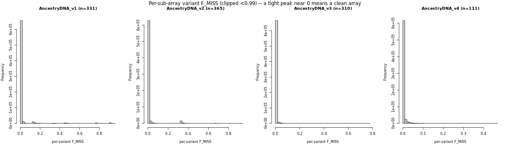
AncestryDNA per-sub-array variant F_MISS
FamilyTreeDNA is the easiest of the three: the per-sample
NONMISSING_CT histogram is directly multimodal — no
high-peak variant trick needed. Three clusters are visible and we split
on them directly. (The cross-array variant overlap check at the end of
this document confirms that only three groups are warranted,
even though an earlier exploratory split into four sub-arrays looked
plausible from the histogram alone — see the FamilyTreeDNA notes in the
Summary section.)
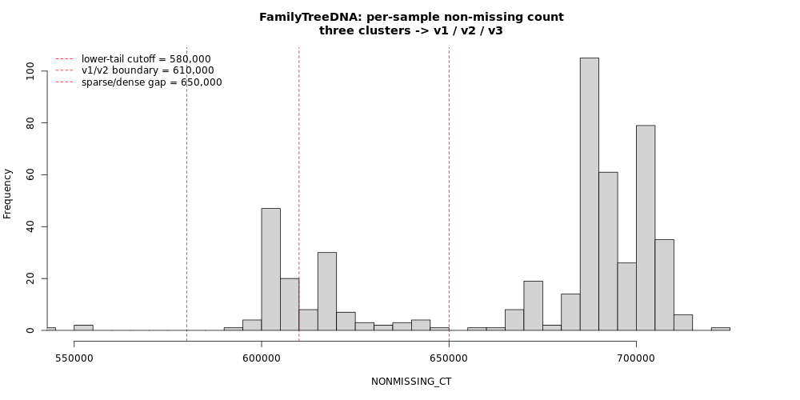
FamilyTreeDNA per-sample NONMISSING_CT with thresholds
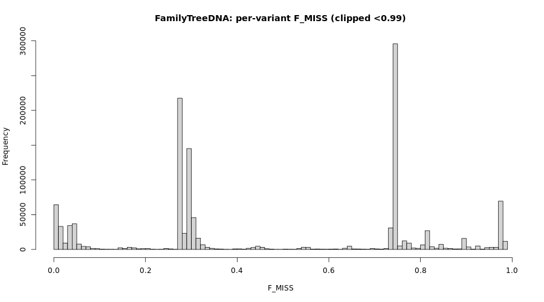
FamilyTreeDNA per-variant F_MISS
smiss <- fread('~/oliverpainfel/Data/OpenSNP/zenodo_18493898/FamilyTreeDNA.smiss')
smiss$NONMISSING_CT <- smiss$OBS_CT - smiss$MISSING_CT
hist(smiss$NONMISSING_CT, 120, xlim = c(550000, 730000),
main = 'FamilyTreeDNA: per-sample non-missing count\nthree clusters -> v1 / v2 / v3',
xlab = 'NONMISSING_CT')
abline(v = c(580000, 610000, 650000), col = 'red', lty = 2)
legend('topleft',
c('lower-tail cutoff = 580,000',
'v1/v2 boundary = 610,000',
'sparse/dense gap = 650,000'),
col = 'red', lty = 2, bty = 'n')
vmiss <- fread('~/oliverpainfel/Data/OpenSNP/zenodo_18493898/FamilyTreeDNA.vmiss')
vmiss <- vmiss[!is.na(vmiss$F_MISS) & vmiss$F_MISS < 0.99, ]
hist(vmiss$F_MISS, 100,
main = 'FamilyTreeDNA: per-variant F_MISS (clipped <0.99)',
xlab = 'F_MISS')
# Three clusters kept, plus a lower tail dropped by --mind 0.05 below:
# ~72 samples at 580-610k -> v1 (sparse, lower)
# ~58 samples at 610-650k -> v2 (sparse, upper)
# ~358 samples at >=650k -> v3 (dense)
dat_v1 <- smiss$IID[smiss$NONMISSING_CT >= 580000 & smiss$NONMISSING_CT < 610000]
dat_v2 <- smiss$IID[smiss$NONMISSING_CT >= 610000 & smiss$NONMISSING_CT < 650000]
dat_v3 <- smiss$IID[smiss$NONMISSING_CT >= 650000]
write.table(cbind(dat_v1, dat_v1),
'~/oliverpainfel/Data/OpenSNP/zenodo_18493898/FamilyTreeDNA_v1.keep',
row.names = F, col.names = F, quote = F)
write.table(cbind(dat_v2, dat_v2),
'~/oliverpainfel/Data/OpenSNP/zenodo_18493898/FamilyTreeDNA_v2.keep',
row.names = F, col.names = F, quote = F)
write.table(cbind(dat_v3, dat_v3),
'~/oliverpainfel/Data/OpenSNP/zenodo_18493898/FamilyTreeDNA_v3.keep',
row.names = F, col.names = F, quote = F)# Make per-array beds and apply --geno 0.05 then --mind 0.05 (same recipe as 23andMe)
for version in v1 v2 v3; do
/users/k1806347/oliverpainfel/Software/plink2 \
--bfile ~/oliverpainfel/Data/OpenSNP/zenodo_18493898/FamilyTreeDNA \
--keep ~/oliverpainfel/Data/OpenSNP/zenodo_18493898/FamilyTreeDNA_${version}.keep \
--make-bed \
--out ~/oliverpainfel/Data/OpenSNP/zenodo_18493898/FamilyTreeDNA_${version}
/users/k1806347/oliverpainfel/Software/plink2 \
--bfile ~/oliverpainfel/Data/OpenSNP/zenodo_18493898/FamilyTreeDNA_${version} \
--geno 0.05 \
--make-bed \
--out ~/oliverpainfel/Data/OpenSNP/zenodo_18493898/FamilyTreeDNA_${version}_geno
/users/k1806347/oliverpainfel/Software/plink2 \
--bfile ~/oliverpainfel/Data/OpenSNP/zenodo_18493898/FamilyTreeDNA_${version}_geno \
--mind 0.05 \
--make-bed \
--out ~/oliverpainfel/Data/OpenSNP/zenodo_18493898/FamilyTreeDNA_${version}_filtered
done
Per-sub-array variant F_MISS after splitting. v3 is
clean (single tight peak near zero); v1 and v2 still show some
bimodality, indicating the sparse group probably contains
low-grade chip-version heterogeneity that the sample histogram doesn’t
resolve. The residual is absorbed by --geno 0.05, which
only keeps variants present in ≥95% of each sub-array’s samples — and
--mind 0.05 drops just one sample across all three
sub-arrays, so the splits are usable as-is.
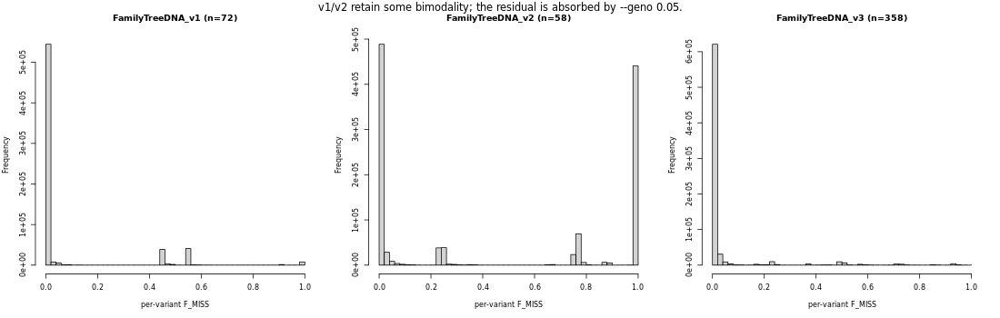
FamilyTreeDNA per-sub-array variant F_MISS
After all splitting and filtering, the per-array sample
(n_ind) and variant (n_var) counts are
summarised by the chunk below. The relevant output is included as a
static table immediately afterwards so the document is readable without
re-running the chunks.
library(data.table)
# Check sample size and number of variants in filtered and unfiltered versions of each dataset
datasets <- c('23andme','23andme_v3','23andme_v4','23andme_v5',
'AncestryDNA','AncestryDNA_v1','AncestryDNA_v2','AncestryDNA_v3','AncestryDNA_v4',
'FamilyTreeDNA','FamilyTreeDNA_v1','FamilyTreeDNA_v2','FamilyTreeDNA_v3')
types <- c('filtered','unfiltered')
stats <- NULL
for(i in datasets){
for(j in types){
tmp_bim <- fread(
paste0(
'~/oliverpainfel/Data/OpenSNP/zenodo_18493898/',
i,
ifelse(j == 'filtered', '_filtered', ''),
'.bim'
),
header = F
)
tmp_fam <- fread(
paste0(
'~/oliverpainfel/Data/OpenSNP/zenodo_18493898/',
i,
ifelse(j == 'filtered', '_filtered', ''),
'.fam'
),
header = F
)
stats <- rbind(
stats,
data.frame(
dataset = i,
type = j,
n_var = nrow(tmp_bim),
n_ind = nrow(tmp_fam)
)
)
}
}
# A lot more variants are retained per array than in the company-wide
# `_filtered` files shipped in the Zenodo archive, because we no longer
# have to take the intersection across chips.Snapshot of the _filtered per-array counts produced
above:
| array | n_ind | n_var |
|---|---|---|
| 23andme_v3_filtered | (see below) | 933,618 |
| 23andme_v4_filtered | (see below) | 459,381 |
| 23andme_v5_filtered | (see below) | 585,145 |
| AncestryDNA_v1_filtered | 331 | 675,445 |
| AncestryDNA_v2_filtered | 364 | 650,609 |
| AncestryDNA_v3_filtered | 310 | 680,327 |
| AncestryDNA_v4_filtered | 111 | 663,343 |
| FamilyTreeDNA_v1_filtered | 72 | 561,522 |
| FamilyTreeDNA_v2_filtered | 57 | 523,207 |
| FamilyTreeDNA_v3_filtered | 358 | 662,827 |
(23andMe sample counts are filled in by the chunk above — these
depend on the exact --mind 0.05 cut and aren’t pinned in
this static snapshot.)
The single best sanity check that a per-company split actually
captured different chips — rather than just two density tiers of the
same chip — is the variant overlap matrix across
sub-arrays. After --geno 0.05 each sub-array has been
reduced to its own clean variant set; if two sub-arrays share ~all of
their variants, they are the same chip and should be merged.
# Sanity-check the sub-array splits: how many variants survive the per-array
# --geno 0.05 filter in *every* sub-array of a given company? A clean split
# leaves a large shared backbone but each sub-array also has chip-specific
# variants that the others don't.
library(data.table)
groups <- list(
'23andme' = c('23andme_v3','23andme_v4','23andme_v5'),
'AncestryDNA' = c('AncestryDNA_v1','AncestryDNA_v2','AncestryDNA_v3','AncestryDNA_v4'),
'FamilyTreeDNA' = c('FamilyTreeDNA_v1','FamilyTreeDNA_v2','FamilyTreeDNA_v3')
)
overlap <- NULL
for (company in names(groups)) {
vars <- lapply(groups[[company]], function(x)
fread(paste0('~/oliverpainfel/Data/OpenSNP/zenodo_18493898/', x, '_filtered.bim'),
header = F)$V2
)
names(vars) <- groups[[company]]
shared_all <- Reduce(intersect, vars)
union_all <- Reduce(union, vars)
overlap <- rbind(overlap, data.frame(
company = company,
n_arrays = length(vars),
per_array_n = paste(sapply(vars, length), collapse = '/'),
shared_all = length(shared_all),
union_all = length(union_all),
shared_frac_min = round(length(shared_all) / min(sapply(vars, length)), 3)
))
}
print(overlap)
# Pairwise overlap within each company (helpful to see *which* sub-array is
# the odd one out, if any).
for (company in names(groups)) {
vars <- lapply(groups[[company]], function(x)
fread(paste0('~/oliverpainfel/Data/OpenSNP/zenodo_18493898/', x, '_filtered.bim'),
header = F)$V2
)
names(vars) <- groups[[company]]
m <- outer(seq_along(vars), seq_along(vars),
Vectorize(function(i, j) length(intersect(vars[[i]], vars[[j]]))))
dimnames(m) <- list(names(vars), names(vars))
cat('\n', company, '— pairwise variant overlap:\n', sep = '')
print(m)
}| company | n_arrays | per-array variants | shared across all | shared / smallest |
|---|---|---|---|---|
| 23andme | 3 | 933,618 / 459,381 / 585,145 | 105,451 | 0.230 |
| AncestryDNA | 4 | 675,445 / 650,609 / 680,327 / 663,343 | 390,448 | 0.600 |
| FamilyTreeDNA | 3 | 561,522 / 523,207 / 662,827 | 153,826 | 0.292 |
23andMe — the OmniExpress backbone is shared by v3 and v4 (453k); v5 (GSA) is genuinely different from both:
| 23andme_v3 | 23andme_v4 | 23andme_v5 | |
|---|---|---|---|
| 23andme_v3 | 933,618 | 452,737 | 189,684 |
| 23andme_v4 | 452,737 | 459,381 | 106,485 |
| 23andme_v5 | 189,684 | 106,485 | 585,145 |
AncestryDNA — all four chips share a 390k backbone, and pairwise overlaps are 414–641k. v3 and v4 share the most (641k of 663–680k), but each still has tens of thousands of chip-specific variants, so they are genuine separate chips, not duplicates:
| v1 | v2 | v3 | v4 | |
|---|---|---|---|---|
| AncestryDNA_v1 | 675,445 | 414,794 | 441,568 | 433,898 |
| AncestryDNA_v2 | 414,794 | 650,609 | 520,344 | 507,753 |
| AncestryDNA_v3 | 441,568 | 520,344 | 680,327 | 641,340 |
| AncestryDNA_v4 | 433,898 | 507,753 | 641,340 | 663,343 |
FamilyTreeDNA — two genuinely different chips: the sparse family (v1 + v2) shares 486k variants out of 523–561k (~93%), and v1 ∩ v2 is much higher than either’s overlap with v3 (only ~155–199k). The dense group used to be split further into a v3/v4 pair by sample missingness, but the pairwise overlap was 656k of 657–683k (99.8%) — meaning that “v4” is essentially a slightly higher-density version of the same chip. Those two were therefore merged into a single v3.
| v1 | v2 | v3 | |
|---|---|---|---|
| FamilyTreeDNA_v1 | 561,522 | 486,260 | 199,085 |
| FamilyTreeDNA_v2 | 486,260 | 523,207 | 154,163 |
| FamilyTreeDNA_v3 | 199,085 | 154,163 | 662,827 |
(v1 and v2 are kept distinct because they carry meaningfully different variant counts — 561k vs 523k — and the within-pair overlap is “only” ~93%, not the 99.8% seen for the merged v3/v4 dense group.)